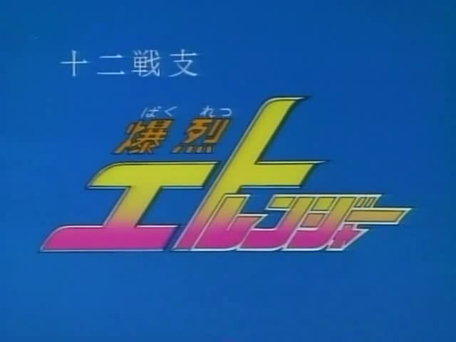

十二生肖守护神
中文名称：十二生肖守护神
英文名称：The Twelve Warriors Bakuretsu Eto-ranger
别名：十二戦支 爆裂エトレンジャー
资源类型：TVRip
版本：[无字幕RAW版][07更新中][全39话]
地区：日本
语言：日语
简介：

http://img.verycd.com/posts/0606/post-200407-1149726634.jpg
http://img.verycd.com/posts/0606/post-200407-1149726692.gif
http://img.verycd.com/posts/0606/post-200407-1149726720.gif
http://img.verycd.com/posts/0606/post-200407-1149726742.gif
http://img.verycd.com/posts/0606/post-200407-1149726777.gif
http://img.verycd.com/posts/0606/post-200407-1149726792.gif
http://img.verycd.com/posts/0606/post-200407-1149726831.gif
http://img.verycd.com/posts/0606/post-200407-1149726845.gif
http://img.verycd.com/posts/0606/post-200407-1149726870.gif
http://img.verycd.com/posts/0606/post-200407-1149726895.gif
http://img.verycd.com/posts/0606/post-200407-1149726910.gif
http://img.verycd.com/posts/0606/post-200407-1149726925.gif
http://img.verycd.com/posts/0606/post-200407-1149726941.gif